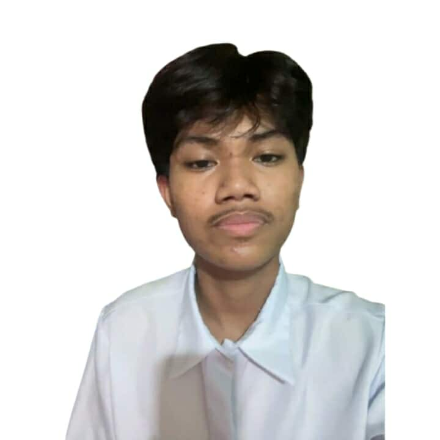

Dale Eugenio
My name is Dale Eugenio, a senior high school student in the ABM strand. I grew up in Pasig, and my main interests are basketball and cooking.
I chose the ABM strand because one of my closest friends also decided to take it. Having someone I trust made me feel more confident in choosing this strand, since we can support each other in our studies. Along the way, I also realized that ABM can really help me develop skills that will be useful in my future.
If I were not in the ABM strand, my wildest dream would be to become a firefighter. I admire how they show courage, discipline, and sacrifice in saving lives during emergencies. Even if my path is in ABM, I know that the same dedication and bravery of a firefighter can also guide me in achieving my future goals.